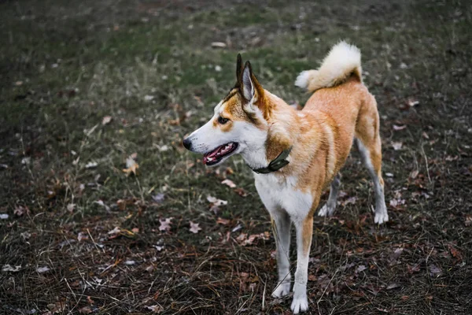
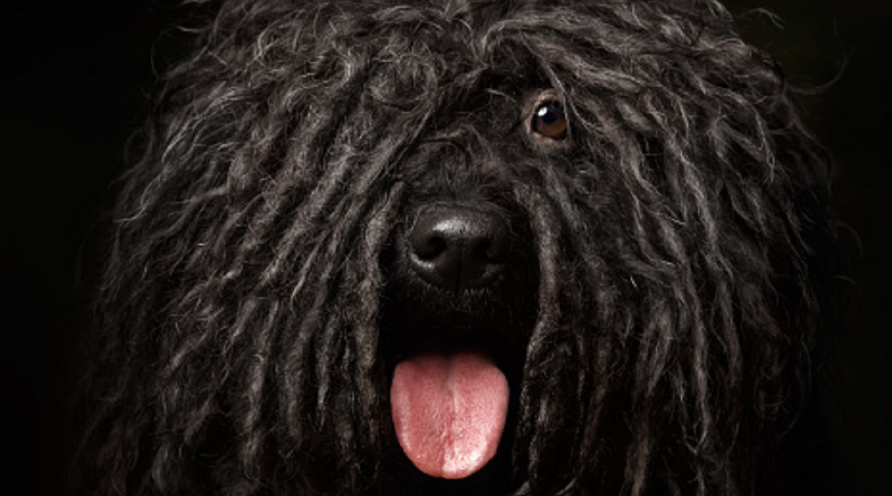
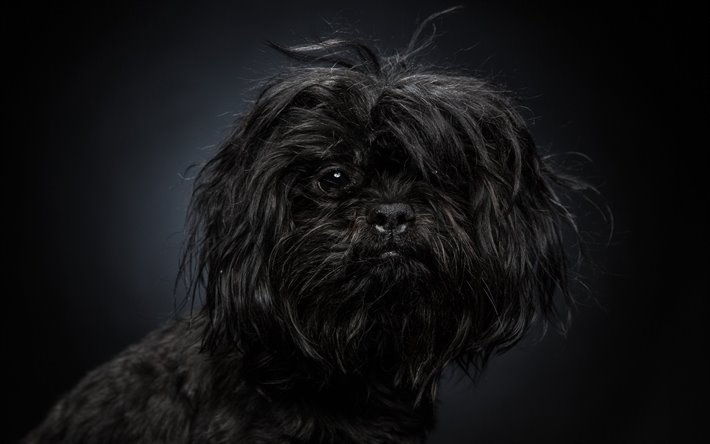
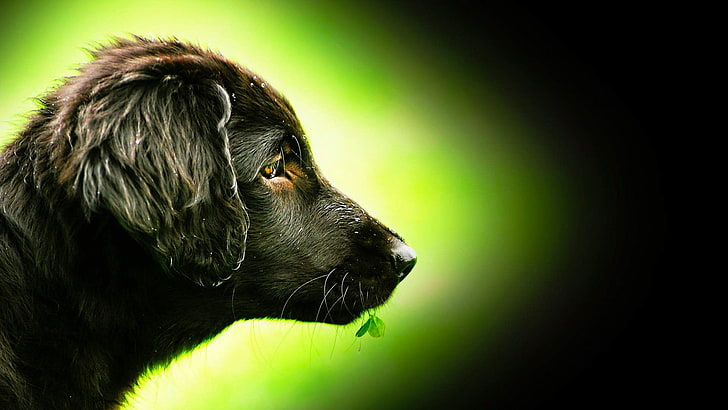
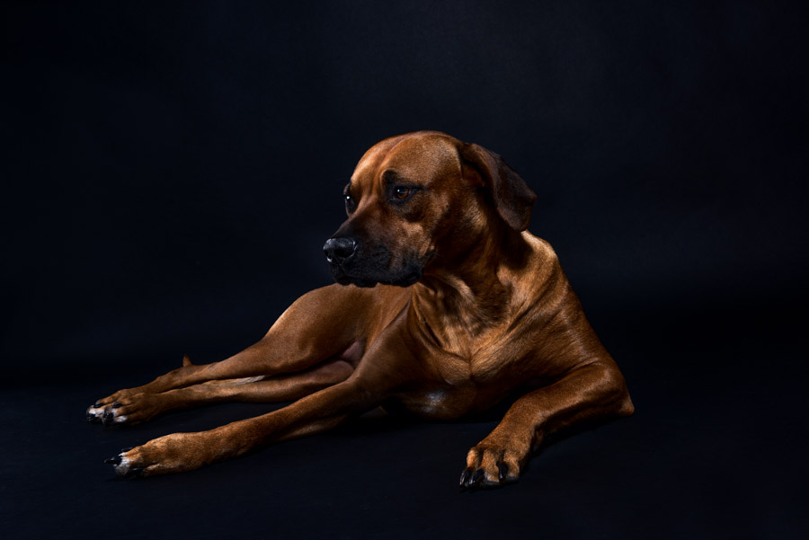

Nesli Tükenmekte Olan Köpek Cinsleri
Yeryüzünde nesli tükenme tehlikesi ile karşı karşıya olan birçok canlı gibi köpek türleri de bulunmaktadır.
Ekolojik dengenin bozulması, savaş ve doğal felaketler ile köpek türlerinin korunmaması ve bilinçsiz melezleme
gibi pek çok neden saf ırkların bozulmasına ve köpek cinslerinin yok olmasına neden olmaktadır. Nesilleri tükenmeye
yüz tutmuş bazı köpek ırkları ise şunlardır;

- Norwegian Lundehund

- Puli

- Affenpinscher

- Black and Tan Coonhound

- Tüysüz Çin Köpeği

- Rhodesian Ridgeback
|